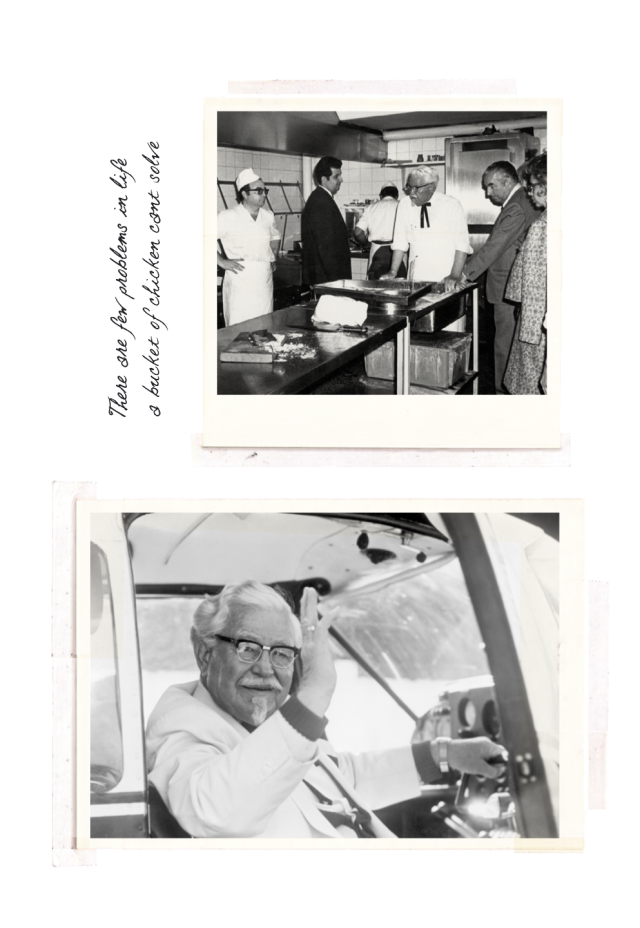

ABOUT US

THE MAN,
THE MYTH,
THE LEGEND
In 1930, in a humble service station in Corbin, Kentucky,
40-year old Harland Sanders began feeding hungry travellers.
Sanders spent the next nine years (now that's dedication)
perfecting his secret blend of 11 herbs and spices,
as well as the basic cooking technique we still use today.
There are now over 24,000 KFC outlets in more than 145 countries
and territories around the world.